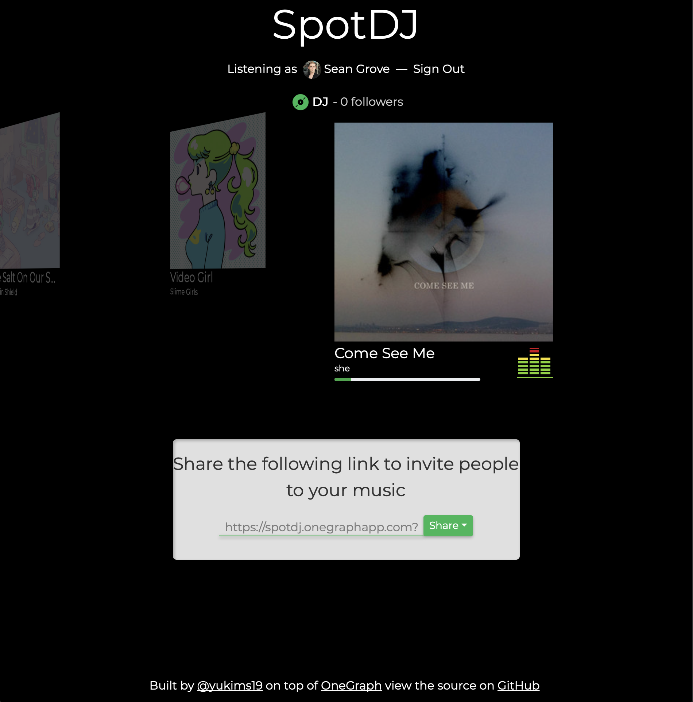

YGLF Lithuania
Having your cake and eating it too:
GraphQL and Reason
Who am I?
- Sean Grove (@sgrove), from SF
- Cofounder of (@OneGraphIO)
- YC S11 / VP Eng / YC S18
- Background in Clojure(Script)/Reason/Rust
REST is cool
- Lots of industrial experience
- Frameworks galore!
- Infrastructure is robust
Any similar but new tech has a lot of ground to cover if it's to catch up.
Example: Spotify REST API
- The API documentation is great!
- … but meant entirely for humans
- What if we wanted to ask questions about the content of the API?
Imagine we're building a node client, and we want to know if we've covered all of the endpoints.
How would we do that with Spotify's docs?
REST challenges
Computer assistance is one way only
GraphQL & Introspectability
- Computer-based introspection is fundamental to GraphQL
Quick prelude: GraphQL basics
GraphQL has three top-level parts:
query: Top-level read-only datamutation: "Write" or effectful operation that returns read-only datasubscription: Continuous read-only data
GraphQL Syntax
query {
user {
# select these two fields from a User
id
email
}
}
mutation {
# The GraphQL server has defined a mutation called
# setEmail parameterized by a string argument
setEmail(newEmail: "sean@onegraph.com") {
# In this case, this operation returns a "User",
# same as query above
id
email
updatedAt
}
}
Sending a GraphQL request
{
"query": "query {\n user {\n # select these two fields from a User\n id\n email\n }\n}",
"variables": null,
"operationName": null
}
Put the operations from before into a string, and put it in a JSON structure under the "query" key.
Then add "variables" and "operationName" (both nullable) to form a full payload for a GraphQL request.
Let's send a request!
query {
npm {
package(name: "express") {
name
downloads {
lastMonth {
count
}
}
}
}
}
curl 'https://serve.onegraph.com/dynamic?app_id=0b33e830-7cde-4b90-ad7e-2a39c57c0e11' \
-H 'Content-Type: application/json' \
-H 'show_beta_schema: true' \
-d '{"query":"query { npm { package(name: \"express\") { name downloads { lastMonth { count } } } } }"}'
Try copy/pasting the curl command, it should just work™!
GraphQL & Introspectability
We can select more than data from the API…
We can select more than data ABOUT the API…
query {
__schema {
types {
name
}
}
}
curl 'https://serve.onegraph.io/dynamic?app_id=0b33e830-7cde-4b90-ad7e-2a39c57c0e11' -k \
-H 'Content-Type: application/json' \
-H 'show_beta_schema: true' \
-d '{"query":"query IntrospectionQuery { __schema { types { name } } }"}' | jq -C "." | head -n 150
Try copy/pasting the curl command (with jq installed) to see the first 150 types defined by this GraphQL service!
Let's find all the objects belonging to Spotify:
fetch(
'https://serve.onegraph.com/dynamic?app_id=0b33e830-7cde-4b90-ad7e-2a39c57c0e11',
{
Headers: {'Content-Type': 'application/json', show_beta_schema: true},
method: 'POST',
body:
'{"query":"query IntrospectionQuery { __schema { types { name } } }"}',
},
).then(result => result.json()).then(result => window.spotifyTypes = result.data.__schema.types.filter(type => type.name.startsWith("Spotify")));
An API that can describe itself to computers!
- We can list all the objects in an API
- We can ask for the fields for those objects
- We can get the type and the description for those fields
- … and so on
Enter: GraphiQL
Let's explore NPM API
Beyond dev-time tooling: Find breaking changes in APIs!

Beyond dev-time tooling: Automated API changelogs!
Beyond dev-time tooling: Built-in mocking
We know the types of all the fields, it's easy to generate fake data!
Can even be taken further with analysis.
Rest Caveats:
- Swagger/OpenAPI: Best effort, often under-specified or outdated
GraphQL? More like TreeQL!
REST can struggle with over/under fetching, multiple round trips, etc.
Example: GitHub REST API
- REST documentation is great!
- Repository payload is pretty big
https://developer.github.com/v3/repos/#get
- But we don't know what the client wants, so we can't help it
What if we want to know which clients have ever looked at a given field?
REST Caveats:
- HATEOAS?
- Ultimately "No true REST"
Computer inspect all the things!
Queries themselves are easily introspectable with GraphQL tooling
- On the server, know which fields a client needs, even across resources
- On the client, provide tooling
How far can introspectable servers and queries go?
What kind of crazy tooling could we build that would super-charge out ability to ship product?
<Demo: Spotify Player with zero coding>
REST Caveats:
How would you do that with the (great!) Spotify REST API documentation
…
…
¯\_(ツ)_/¯ ¯\_(ツ)_/¯ ¯\_(ツ)_/¯
Final caveat
GraphQL is not SQL, it's fundamentally - and intentionally - more limited in its expressiveness.
JavaScript is Cool
- Lots of industrial experience
- Frameworks galore!
- Infrastructure is robust
Any similar but new tech has a lot of ground to cover if it's to catch up.
Not without challenges, however
function insertCustomer(name, subName, org, rating, order) {
...
}
- What's `subName`? What does it refer to?
- What is `org`?
Ambiguous and difficult
What about TypeScript?
Reason is TypeScript with:
- immutable.js
- rambda + fp
- eslint
- Strict-null checking
- Exhaustive switches and reachability
- Native syntax for pattern-matching, destructuring
All built in, plus:
- built-in preprocesser (like babel transforms)
- Sound type-system
- Native compilation targets
More about ReasonML
- A typed language that tries to - ultimately - make us happier
- ~25 years old
- Lots of academic investment
- Fantastically broad reach
- JS
- Native
- x86
- ARM64
- eps32 (Well-typed lightbulbs)
- Mobile (without JSC!)
- iOS
- Android
- Serverless (by @anmonteiro, demo)
- Native binary, single file
- Boots in < 10ms (cold start)
- Entire process completes in 1ms for
hello-worldinvocation - Library to use from AWS Lambda or Zeit's now
- Unikernels
- Careful attention to developer experience
- Including very similar syntax to JavaScript ("ES2030")
Reason focuses explicitly in making web UIs & frontends as easy as possible:
- Syntax (JSX)
- Web UIs
- Component state + transitions
- Routing
- Interop with JS, including every React component in the npm ecosystem
"[Reason] is the best way to take React to the next level"
- Jordan Walke, creator of Reason, React
Compare new ReasonReact component to new React.js component
Still, there are challenges in typed languages:
- Difficult to know how to represent certain ideas
- React.js prototype (SML)
- Some valid (or valid enough) programs are impossible to represent
- Dependent types, etc.
But, if we're on board with those challenges, what can we do?
What about combining GraphQL's introspectability, Reason's babel-like preprocesser, and the slick type-safe ReasonReact?
Editor demo
Hot reloading? How hot?
live reprocessing demo
… and a race!
Reason is:
- Fast
- Fun
- Practical
- Thoughtful
On the Frontend
What do we get?
- Powerful clients (GraphQL)
- Get exactly what you want (no over/under fetching)
- Reduced latency and network calls (huge for mobile)
- Safe client (Reason)
- Won't even compile if server can't satisfy query
- Usage of query results are type-checked
- Nullable fields are enforced - no more run-time errors!
- Easy clients
- Don't even think about network coordination
- Declaratively express requirements alongside components
How does it work?
Read https://github.com/Astrocoders/reason-apollo-hooks/blob/master/README.md#usequery
On the Backend
Why in Reason(Native)?
As mindful server developers, we have to remember the goals of the clients:
- Productivity
- Safety
- Stability
- Guarantees
- If you say you'll return an Int, return an int
- If you say a field is not nullable, do not return a null
- To be courteous, do this checking at compile time, not at run time (otherwise the client gets more error responses than they'd like)
Ever-vigilant
Make sure you're adhering to all the previous points:
- Even as your schema grows
- Even as your team grows
- Even as you're pushing a commit in a hurry on a rainy Friday at 19:30
How in Reason(Native)?
- Best GraphQL Server in the world
bar none.※
※ … having not really used any others
Easily create a compile-time safe GraphQL engine:
type user = {
id: int,
name: string,
};
/* User object */
let user =
Schema.(
obj("user", ~doc="A user in the system", ~fields=_ =>
[
field(
"id",
~doc="Unique user identifier",
~typ=non_null(int),
~args=Arg.[],
~resolve=(ctx, p) =>
p.id
),
field("name", ~typ=non_null(string), ~args=Arg.[], ~resolve=(ctx, p) =>
p.name
),
]
)
);
Combine objects together into an explicit schema for your clients
/* Schema that clients will see */
let schema =
Schema.(
schema([
field(
"users",
~typ=non_null(list(non_null(user))),
~args=Arg.[],
~resolve=(ctx, ()) =>
users
),
])
);
Example of breaking schema
Limitations
Both GraphQL and Reason are still figuring lots of things out.
What you see is usable today, but isn't the final product.
React hooks are an example!
Frontend
Not all of the GraphQL spec covered (though most of it is now)
Probably won't be able to easily get GraphiQL-like auto-complete in-editor (maybe atom?)
Backend
Still figuring lots of things out:
How to propagate errorsUnions/InterfacesSubscriptionsDirectives- Integrating into e.g. Apollo Engine
Wider implications of GraphQL and typed languages
- ClojureScript before/after React.js
GraphQL wrappers make dealing with APIs in typed languages easier than any alternative:
- In-editor autocomplete
- Type safety
- Data-structure hints
What does it mean for Reason (or Elm/Purescript/etc.) client and server devs if every service has a GraphQL wrapper?
GraphQL and Reason, a match made in heaven!
Example app: SpotDJ

- Sean Grove (@sgrove)
- Cofounder of (@OneGraphIO)
Ačiū, Vilnius!